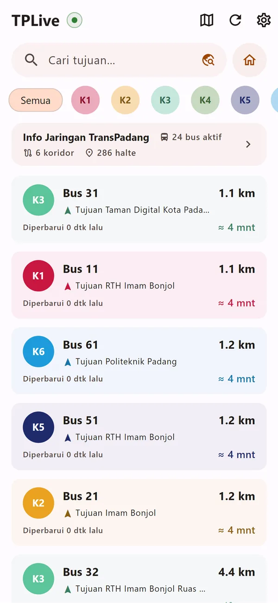
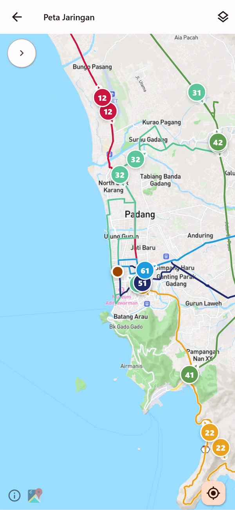
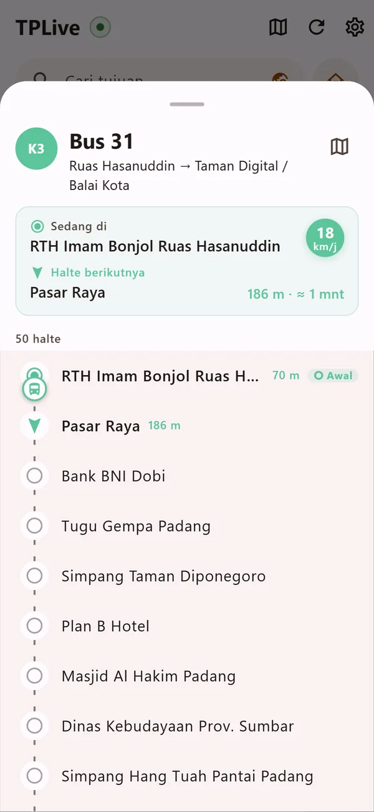

Bus beroperasi 06.00–19.00 WIB
Di mana bus TransPadang sekarang?
Lihat posisi bus K1–K6 di peta, cari halte untuk tujuanmu, dan perkirakan kapan bus tiba di dekatmu.
GratisTanpa akun & iklanOpen source (MIT)

Seluruh jaringan di satu peta
Setiap bus tampil dengan warna koridornya, bergerak mengikuti rute. Pilih satu koridor untuk menyaring, atau lihat semuanya sekaligus.
- K1
- K2
- K3
- K4
- K5
- K6
6 koridor · 286 halte

Ketuk bus, lihat halte berikutnya
Daftar halte lengkap dengan posisi bus saat ini, halte berikutnya, jarak, dan perkiraan menit sampai. Cocok untuk memutuskan perlu jalan cepat atau santai.
Perkiraan menghitung jarak garis lurus dibagi kecepatan bus, bukan jalur jalan. Anggap sebagai ancer-ancer.

Yang lain di dalamnya
Cari tujuan
Ketik nama tempat; TPLive menyarankan halte naik dan turun yang searah dengan bus.
Ikuti bus (Android)
Notifikasi saat bus hampir tiba di halte naik atau turunmu, juga ketika aplikasi di latar belakang.
Terang, gelap, dan Material You
Mengikuti tema perangkat. Di Android, warna aplikasi bisa mengikuti wallpaper.
Dua bahasa
Bahasa Indonesia dan English.
Tiga langkah
Izinkan lokasi
Supaya bus diurutkan dari yang terdekat denganmu. Lokasi tetap di perangkatmu.
Pilih koridor atau cari tujuan
Ketuk salah satu koridor di beranda, atau bilah “Cari tujuan”.
Pantau bus
Buka bus untuk melihat halte berikutnya dan perkiraan tiba, lalu berangkat.
Perlu kamu tahu
Jam layanan. Data bus hanya ada pukul 06.00–19.00 WIB. Di luar jam itu daftar kosong dan itu normal.
Tidak resmi. TPLive proyek independen, tidak berafiliasi dengan Pemerintah Kota Padang atau pengelola TransPadang. Data berasal dari layanan publik TransPadang yang bisa berubah tanpa pemberitahuan.
Web vs Android. Versi web tidak punya “Ikuti bus”, karena notifikasi latar belakang butuh layanan Android native.
Mengapa tidak ada bus di layar?
Layanan hanya mengirim data 06.00–19.00 WIB. Di dalam jam itu pun, bus yang belum mengirim posisi dalam 5 menit terakhir disembunyikan.
Apakah lokasiku dikirim ke server?
Tidak ke server TPLive — kami tidak punya server. Lokasi dipakai di perangkatmu untuk mengurutkan bus dan menghitung perkiraan. Detail di Kebijakan Privasi.
Apakah ini aplikasi resmi?
Bukan. Ini proyek open source buatan komunitas; kode dan lisensinya terbuka di GitHub.
Bagaimana memasang APK?
Unduh berkas APK, buka, dan izinkan pemasangan dari sumber ini bila diminta Android. Pembaruan dipasang dengan cara yang sama; bila gagal karena tanda tangan berbeda, copot versi lama lebih dulu.